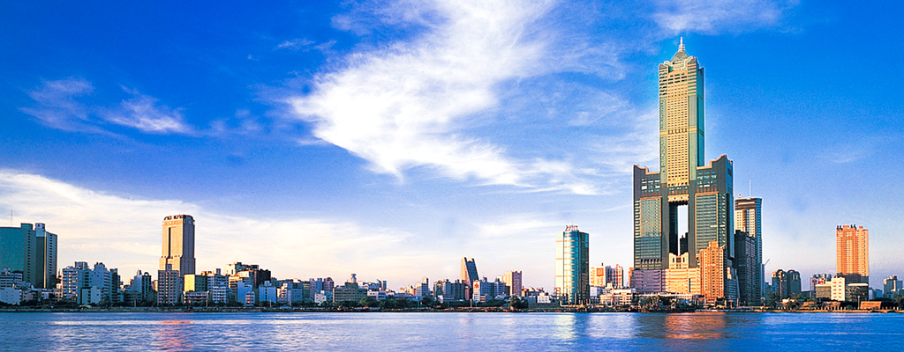
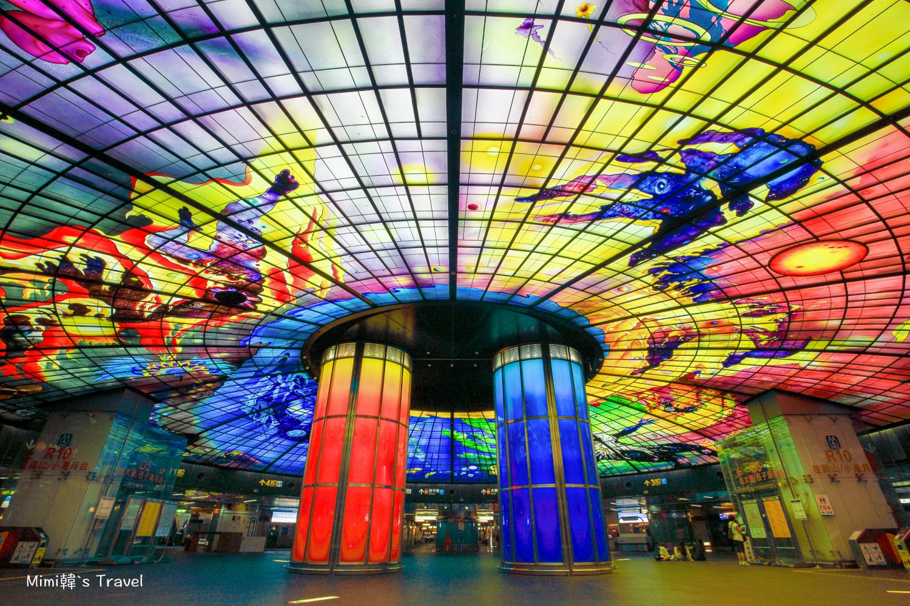

熱門景點

85大樓
高雄最具代表性的地標建築之一， 曾是臺灣最高摩天大樓， 可欣賞壯麗港灣與城市天際線。

美麗島捷運站
擁有世界知名的「光之穹頂」， 絢麗的彩繪玻璃藝術讓車站成為高雄必訪景點。

愛河
高雄最浪漫的河岸景觀， 白天悠閒愜意，夜晚燈光映照水面， 展現港都迷人的風采。
高雄是臺灣南部的最大都會區與第一大港口， 素有「港都」之稱。氣候溫暖宜人、擁有豐富的山海河港景觀及便利的捷運輕軌網絡， 結合了現代藝文與傳統眷村、客家及原民文化， 是一座充滿活力與熱情的海洋城市。

高雄最具代表性的地標建築之一， 曾是臺灣最高摩天大樓， 可欣賞壯麗港灣與城市天際線。

擁有世界知名的「光之穹頂」， 絢麗的彩繪玻璃藝術讓車站成為高雄必訪景點。
高雄最浪漫的河岸景觀， 白天悠閒愜意，夜晚燈光映照水面， 展現港都迷人的風采。